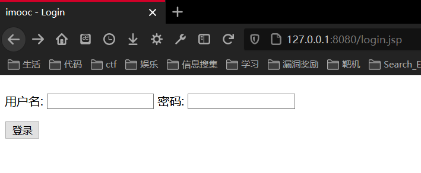
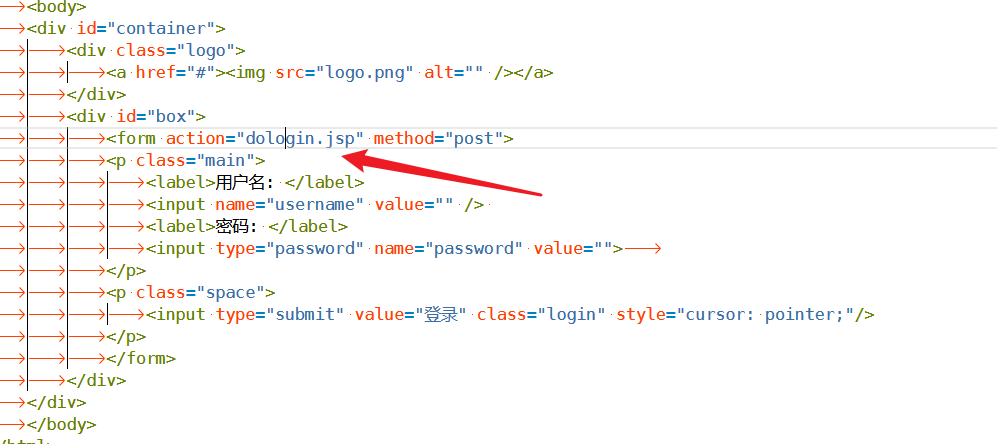
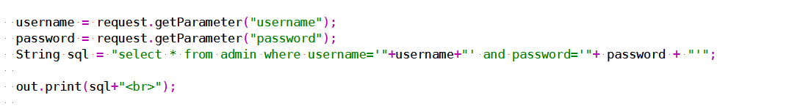
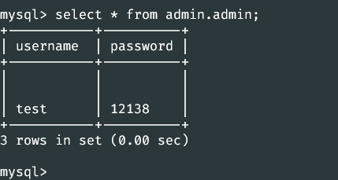
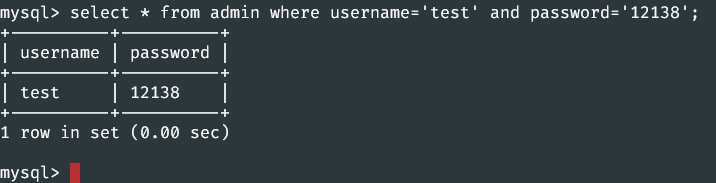
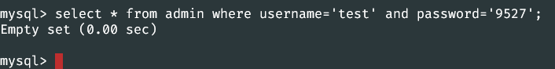
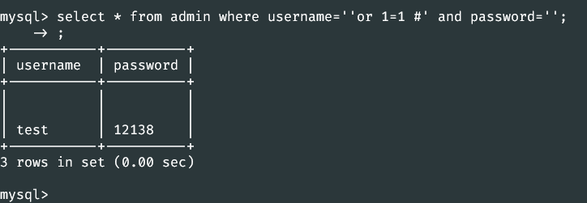

原理
参考自：https://juejin.cn/post/6844903917654900743
sql注入的原理是将sql代码伪装到输入参数中，传递到服务器解析并执行的一种攻击手法。也就是说，在一些对server端发起的请求参数中植入一些sql代码，server端在执行sql操作时，会拼接对应参数，同时也将一些sql注入攻击的“sql”拼接起来，导致会执行一些预期之外的操作。
在OWASP中是这样子解释的
- 引用描述：
几乎任何数据源都能成为注入载体，包括环境变量、所有类型的用户、参数、外部和内部Web服务。当攻击者可以向解释器发送恶意数据时，注入漏洞产生。 - 安全弱点
注入漏洞十分普遍，尤其是在遗留代码中。注入漏洞通常能在SQL、LDAP、XPath或是NoSQL查询语句、OS命令、XML解析器、SMTP包头、表达式语句及ORM查询语句中找到。注入漏洞很容易通过代码审查发现。扫描器和模糊测试工具可以帮助攻击者找到这些漏洞。 - 影响
注入能导致数据丢失、破坏或泄露给无授权方，缺乏可审计性或是拒绝服务。注入有时甚至能导致主机被完全接管。您的应用和数据需要受到保护，以避免对业务造成影响。
自己的例子
这边那我自己写的一个古老的jsp网页来说说，
登陆页
http://127.0.0.1:8080/login.jsp


主要功能由dologin.jsp实现。接着来看dologin.jsp的内容

这边写的也是非常简单，获取到参数后直接拼接，
"select * from admin where username='"+username+"' and password='"+ password + "'";
这种处理sql语句的方式就导致了注入，
我数据库中的账号密码是这个

如果我们正经输入账号密码是这样子的
select * from admin where username=’test’ and password=’12138’;
这个sql语句在mysql中执行是这样子的

如果我们输入了错误的账号密码，是这样子的结果
select * from admin where username=’test’ and password=’9527’;

在jsp中通过一个if判断就可以知道用户是否在数据库中，也就完成了登陆的账号密码验证。
而如果我们不正经的输入了一些奇怪的东西。比如在
‘or 1=1 #
sql语句就变成了
select * from admin where username=’’or 1=1 #’ and password=’’;
而当这个sql语句直接在数据库中执行

什么都没有，显示还在等待，输入一个分号就出来了结果，因为#注释掉了后面的语句，整个句子就变成了
select * from admin where username=’’or 1=1 #
至于为什么在jsp中这样子就可以登陆成功，姑且理解为自动填充了一个分号吧。这里我也没搞明白
防御
sql预编译
基本上大家都知道 采用sql语句预编译和绑定变量，是防御sql注入的最佳方法。但是其中的深层次原因就不见得都理解了。
String sql = "select id, no from user where id=?";
PreparedStatement ps = conn.prepareStatement(sql);
ps.setInt(1, id);
ps.executeQuery();
严格的参数校验
拿正则或者其他的函数，过滤掉不该出现的关键字或字符
owasp top10中关于如何防止注入
防止注入漏洞需要将数据与命令语句、查询语句分隔开来。
• 最佳选择是使用安全的API，完全避免使用解释器，或提供参数化界面的接口，或迁移到ORM或实体框架。
注意：当参数化时，存储过程仍然可以引入SQL注入，如果PL/SQL或T-SQL将查询和数据连接在一起，或者执行带有立即执行或exec()的恶意数据。
• 使用正确的或“白名单”的具有恰当规范化的输入验证方法同样会有助于防止注入攻击，但这不是一个完整的防御，因为许多应用程序在输入中需要特殊字符，例如文本区域或移动应用程序的API。
• 对于任何剩余的动态查询，可以使用该解释器的特定转义语法转义特殊字符。OWASP的Java Encoder和类似的库提供了这样的转义例程。
注意：SQL结构，比如：表名、列名等无法转义，因此用户提供的结构名是非常危险的。这是编写软件中的一个常见问题。
• 在查询中使用LIMIT和其他SQL控件，以防止在SQL注入时大量地泄露记录。